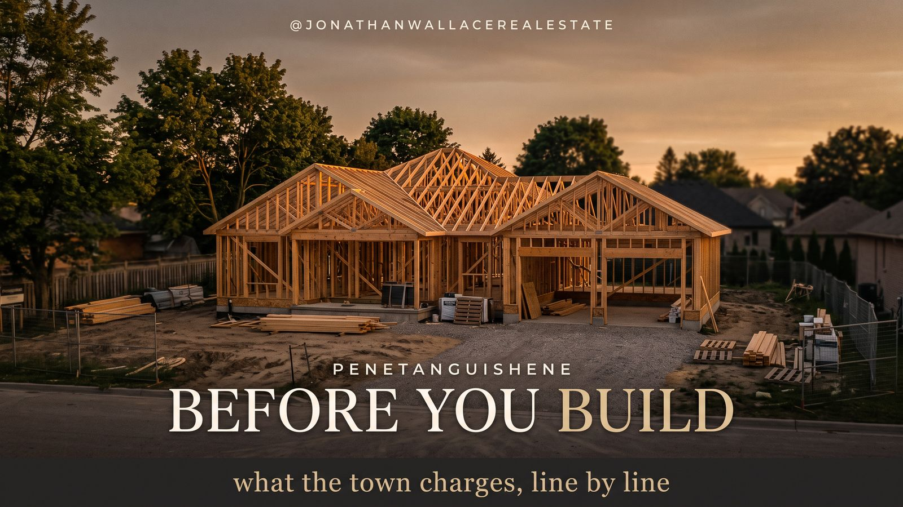

Building in Penetanguishene

People ask what it costs to build in Penetanguishene and get an answer in ranges. Ranges are useless when you are writing an offer on a lot. So here is one specific house, priced line by line at 2026 rates.
The build. A 1,500 square foot bungalow with three bedrooms on the main floor. A fully finished 1,500 square foot basement with a fourth bedroom and a bathroom. An attached double car garage at 576 square feet. An uncovered rear deck at 240 square feet. A backyard package of a 10 by 15 shed, a fence, landscaping and a hot tub. Three thousand square feet of finished living space on a full service lot inside town.
Figures come from the Town of Penetanguishene 2026 Building Fee Table and the Town of Penetanguishene 2026 Development Charges schedule effective January 1, 2026. Confirm your own numbers with Building Services at 705-549-7453 before you budget on them.
The three costs, in plain language
There are only three buckets. Once you understand these, the fee table stops looking like a wall of numbers.
The building permit fee is what you pay the town to review your drawings and inspect the work, calculated on the size and type of what you are building. The development charge is a one-time charge that applies when you create new living space, and it funds the roads, water, sewer, parks and fire service that new growth uses. The deposit is collected when your permit is issued to cover extra inspections, and the unused portion comes back to you.
Step 1: The building permit fee
The town charges by square metre, by what you are building. Four pieces here, four rates.
- Main floor dwelling, 139.35 sq m at $17.38 per sq m: $2,421.98
- Finished basement built with the house, 139.35 sq m at $6.19 per sq m: $862.60
- Attached double garage, 53.51 sq m at $8.13 per sq m: $435.05
- Uncovered rear deck, 22.30 sq m at $6.19 per sq m: $138.02
Permit fee total: $3,857.65. Just under $3,900 to permit a 3,000 square foot home. That is the part everyone expects to pay, and it is the smallest number on this page.
Step 2: The deposits
The new building deposit for low density residential is $2,421.61, and the extra services deposit on a new dwelling is $538.19, for $2,959.80 refundable at permit. Decks, sheds, signs and tents are exempt from the extra services deposit. If your lot requires a grading approval there is a further $5,000 deposit per lot. It comes back, but it is $5,000 of your cash sitting with the town through construction.
Step 3: The administrative fees
Lot grading administrative assistance and Town Engineer review is $387.50. Processing and collection of applicable law approvals is $67.81. Administrative total: $455.31.
Step 4: The development charges
This is the number that changes the conversation, and there are four separate authorities in it, not two. Effective January 1, 2026, on a full service lot, per single or semi-detached unit:
- Town of Penetanguishene: $27,239
- County of Simcoe: $14,975
- Public school board education charge: $3,711
- Separate school board education charge: $2,372
Total development charges: $48,297. Read that against the permit fee. The town charges $3,857.65 to review and inspect a 3,000 square foot home, and the four authorities together charge $48,297 for the right to add one dwelling unit.
Servicing changes the town charge more than anything else
The Town of Penetanguishene publishes three tiers for a single or semi-detached unit. Full service with municipal water and sewers is $27,239, taking all four authorities to $48,297. Municipal water with no sewers is $20,699, taking the total to $41,757. No municipal water or sewers is $19,047, taking the total to $40,105.
The two education charges are set on their own calendar and hold from October 30, 2025 to October 29, 2026.
The receipt
- Building permit fee: $3,857.65
- Lot grading review and applicable law processing: $455.31
- Town of Penetanguishene development charge: $27,239.00
- County of Simcoe development charge: $14,975.00
- Public school board education charge: $3,711.00
- Separate school board education charge: $2,372.00
- New building deposit, refundable: $2,421.61
- Extra services deposit, refundable: $538.19
Total due to the town at permit: $55,569.76. Of that, $52,609.96 is non-refundable and $2,959.80 comes back. Development charges are 92 per cent of the non-refundable bill. The permit fee is 7 per cent. Across 3,000 square feet of finished living space, the town's bill works out to $17.54 per square foot.
The backyard package: shed, fence, landscaping, hot tub
Here is the part that surprises people. The entire backyard adds nothing to the town's bill. A 10 by 15 shed at 150 square feet is 13.94 square metres, just under the 15 square metre permit threshold. A fence needs no building permit. Landscaping needs no building permit. Neither does a hot tub.
Four conditions decide whether that zero holds.
The shed has to stay under 15 square metres
A 10 by 15 has about 11 square feet of room to spare. Build it 10 by 17 and you are over the line. No building permit does not mean no rules either: the zoning by-law still governs setbacks, height and how much of the lot your accessory buildings can cover.
What a bigger shed or shop costs
Plenty of people do not want a shed, they want a shop. Two thresholds apply and they do not line up. The permit requirement starts at 15 square metres, which is 161.5 square feet. The fee table switches from a flat rate to a per square metre rate at 200 square feet.
- 10 x 15, 150 sq ft: no permit required, $0
- 12 x 16, 192 sq ft: flat rate, $134.55
- 14 x 16, 224 sq ft: $8.13 per sq m, $169.19
- 20 x 20, 400 sq ft: $8.13 per sq m, $302.12
- 24 x 24, 576 sq ft: $8.13 per sq m, $435.05
A 20 by 20 shop creates no new dwelling unit, so it triggers no development charge. Add $321.84 for a wood stove with a chimney, $161.46 for a heating appliance, and $24.76 for each plumbing fixture if you are putting in a sink.
The real constraint on a 400 square foot shop is zoning, not the Building Code. It pushes on lot coverage, height and setbacks all at once, especially on a standard town lot. If it does not fit, the path is a minor variance through the Committee of Adjustment, with its own application fee, a public notice, a hearing date and weeks on the calendar. Ask about zoning first, then the permit.
The hot tub needs an enclosure and an electrical inspection
The town does not require a building permit for a hot tub, but pool and hot tub enclosure requirements can still apply. The electrical is not optional: a hot tub circuit requires an Electrical Safety Authority inspection, which is a separate process from anything the town does. And if the tub is going on the deck rather than a pad, tell your designer before the deck is permitted. A filled hot tub is a substantial point load, and a deck framed for people is not automatically framed for a tub.
Landscaping cannot break the approved grading
This is the expensive one, and it hides in plain sight. If your lot required a grading approval, the town is holding a $5,000 deposit against the finished grade matching the approved plan. Berms, raised beds and imported fill all change how water leaves your property. Do the landscaping in a way that respects the approved grading, get your final sign-off, get the $5,000 back, then keep going. A retaining wall over one metre tall is a permit at $618.93 per property.
Why the Town of Penetanguishene is a good place to build
Numbers on a page do not tell you what it is like to actually work with a municipality, and that experience is worth as much as the fee schedule.
Here is what I have seen as a local realtor. Penetanguishene wants development, and the town's posture reflects it from the top down. Jeff Lees, the Chief Administrative Officer, and Andrea Betty, the Director of Planning and Community Development, run a department where the communication with the person reaching out is direct, responsive and non-adversarial. You get answers, from people who are trying to help you get the project done rather than looking for the reason it cannot happen.
That matters more than most people building their first house realize. A municipality that returns your call, tells you plainly what it needs, and works through a problem with you can take months out of a build and thousands of dollars of carrying cost off the top. A municipality that does not can quietly cost you a season.
What this build teaches
The basement is the cheapest 1,500 square feet you will ever build
Finishing the basement with the house cost $862.60 in permit fees and added exactly nothing in development charges. Residential development charges are levied per dwelling unit, not per square foot. One unit is one unit whether it is 1,500 square feet or 3,000. The same space added later is billed at the renovation rate and carries a second permit process.
The development charges are due in cash, at permit, and your mortgage does not cover them
$48,297 lands before framing starts. Construction financing typically advances on progress draws tied to work in place, and development charges are paid before there is any work in place. That gap is the single most common reason a self-build budget goes sideways in this market. If you are buying a vacant lot, this number belongs in your offer math alongside the purchase price.
The deck is $138 and skipping it is the most expensive decision on the list
Building without a permit costs double the normal permit fee, to a maximum of $15,000, plus $247.57 for an order under the Building Code Act, plus $371.36 if that order gets registered on title, where it waits for the next buyer, lender and lawyer to find it.
Two variations worth knowing
The same house on a rural lot, and why it is cheaper
Move this build outside the serviced area and two things happen at once. A new Class 4 or 5 septic system adds $740.54 to the permit. And the town's development charge drops from $27,239 to $19,047, because the lot draws no municipal water or sewer. Non-refundable falls from $52,609.96 to $45,158.50, and the total due at permit falls from $55,569.76 to $48,118.30.
The rural lot comes in $7,451.46 cheaper at the permit counter, septic included. That is not an argument for building rural, because a well and a septic system carry their own construction cost, maintenance and resale conversation. It is an argument for knowing which servicing tier your lot falls into before you price anything.
The same house with a legal second unit in the basement
Rather than a fourth bedroom, finish the basement as a self-contained additional residential unit. Under provincial rules additional residential units are exempt from development charges within set limits, so the second unit does not repeat the $48,297. That is the single largest lever available to anyone building in Penetanguishene right now. The exemption carries conditions on unit count and configuration, so confirm your specific plan with the town before you design around it.
What this number does not include
The land. HST. Your survey and site plan. Water and sewer connection charges. Electrical Safety Authority inspection. Conservation authority review if you are near the shoreline or a wetland. Your architect or designer. And every trade, material and hour of labour that actually builds the house. This is the town's bill, and it is the part most people leave out of the plan.
Frequently asked questions
What does it cost in town fees to build a bungalow in Penetanguishene?
A 1,500 square foot bungalow with a finished 1,500 square foot basement, a 576 square foot attached garage and a 240 square foot deck on a full service lot runs $3,857.65 in building permit fees, $455.31 in administrative fees and $48,297 in development charges across the Town of Penetanguishene, the County of Simcoe and the two school boards. That is $52,609.96 non-refundable, plus $2,959.80 in refundable deposits, for $55,569.76 due at permit.
How much are development charges in Penetanguishene in 2026?
Effective January 1, 2026, a single or semi-detached unit on a full service lot pays $27,239 to the Town of Penetanguishene, $14,975 to the County of Simcoe, $3,711 to the public school board and $2,372 to the separate school board, for $48,297 per unit. A lot with municipal water and no sewers totals $41,757, and a lot with no municipal water or sewers totals $40,105.
Do development charges go up if I finish the basement?
No. Residential development charges in Penetanguishene are charged per dwelling unit, not per square foot. Finishing a 1,500 square foot basement during construction adds $862.60 in permit fees and nothing in development charges.
How big can a shed be in Penetanguishene without a building permit?
Under 15 square metres, which is 161.5 square feet. A 10 by 15 shed at 150 square feet is under the threshold. Between 161.5 and 200 square feet the permit fee is a flat $134.55, and above 200 square feet it is $8.13 per square metre. Zoning setbacks, height and lot coverage rules apply at every size.
How much is a permit for a 20 x 20 shop in Penetanguishene?
A 20 by 20 detached accessory building is 400 square feet, or 37.16 square metres, and the 2026 building permit fee is $302.12 at $8.13 per square metre. It creates no new dwelling unit, so no development charge applies. A wood stove adds $321.84 and plumbing fixtures are $24.76 each. The larger constraint is the zoning by-law, which may require a minor variance.
Do I need a permit for a hot tub, fence or landscaping in Penetanguishene?
None of the three requires a building permit. A hot tub can trigger enclosure requirements and always requires an Electrical Safety Authority inspection for its circuit. Landscaping must not alter an approved lot grading, and a retaining wall over one metre tall is a permit at $618.93 per property.
Are development charges included in a construction mortgage?
They are generally paid in cash when the building permit is issued, before construction begins, while construction financing advances on progress draws tied to completed work. Confirm the timing with your lender before committing to a lot.
Is it cheaper to build on a rural lot near Penetanguishene?
At the permit counter, yes. A septic system adds $740.54 to the permit, but the Town of Penetanguishene development charge falls from $27,239 to $19,047 on a lot with no municipal water or sewers. Total due at permit is $48,118.30 versus $55,569.76 on a full service lot, a difference of $7,451.46, before the construction cost of a well and septic system.
Before you build, let's look at the plans
This is where I come in, and it is deliberately before anything is committed.
Sit down with me and the plans before you build. I will help you make the layout and decor decisions that hold their value, so the floor plan and the money you spend on it are working for you at the end and not just at the start. Most of what gets over-built in a house is decided in a twenty minute conversation that never happened.
Building the right house in the wrong location is the most expensive mistake available in this market, and it is almost always invisible while it is being made. A beautiful home on a lot that does not support its value costs tens of thousands of dollars at resale, and no amount of finish quality fixes it after the fact. I will help you pick the lot first, with the house you actually want to build in mind.
Over-engineering the home is the second. There is a ceiling in every neighbourhood, and spending past it does not come back to you. When the finishes, the square footage or the systems run ahead of what the street supports, you have built a home you cannot get out of at the number you put into it. I will tell you where that ceiling sits before you spend, not after.
A floor plan that does not sell is the third. Layout, flow and curb appeal are resale decisions dressed up as design decisions. I look at your plan the way the next buyer will, and the changes are usually small: where the principal suite sits, how the sightline runs when you open the front door, whether the garage swallows the elevation. Small changes, made on paper, at no cost.
I will also facilitate the conversation with the town. I know the people, I know the process, and I can move a question forward faster than a cold call to a general line.
The goal at the end of all of it is your equity. You should finish this build with a home that is worth more than what you put into it, and with the option to sell it well if life changes. That is the whole job.
Send Jonathan Wallace the lot you are looking at and get a straight read on it before you offer.
Jonathan Wallace, Salesperson, Faris Team Real Estate, Brokerage. 705-433-2525. Fees and development charges change. This article is general information based on the Town of Penetanguishene 2026 Building Fee Table and the 2026 Development Charges schedule effective January 1, 2026, and is not a substitute for confirmation from Building Services or from professional legal, engineering or financial advice.